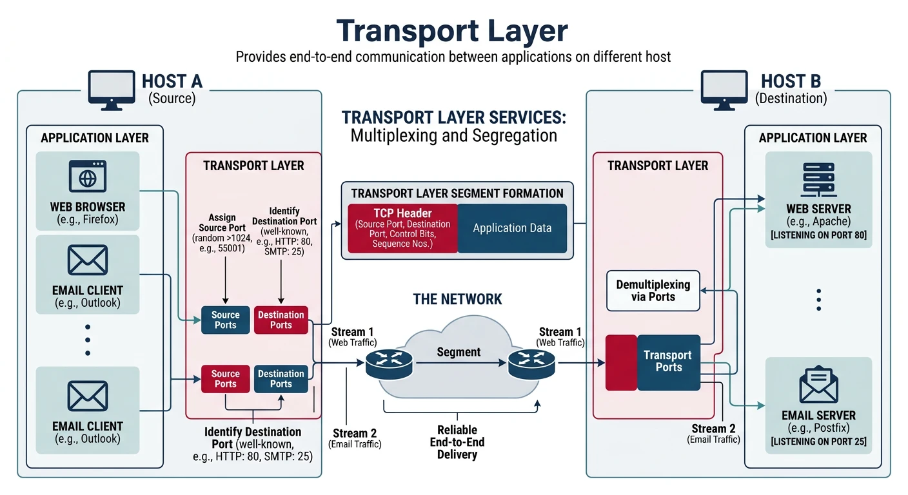
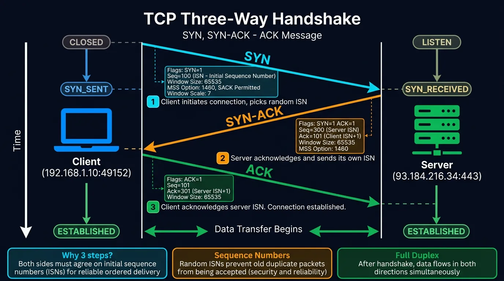
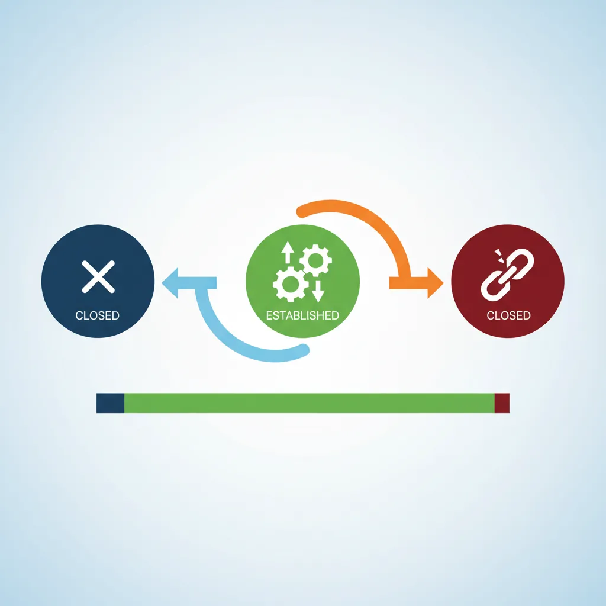
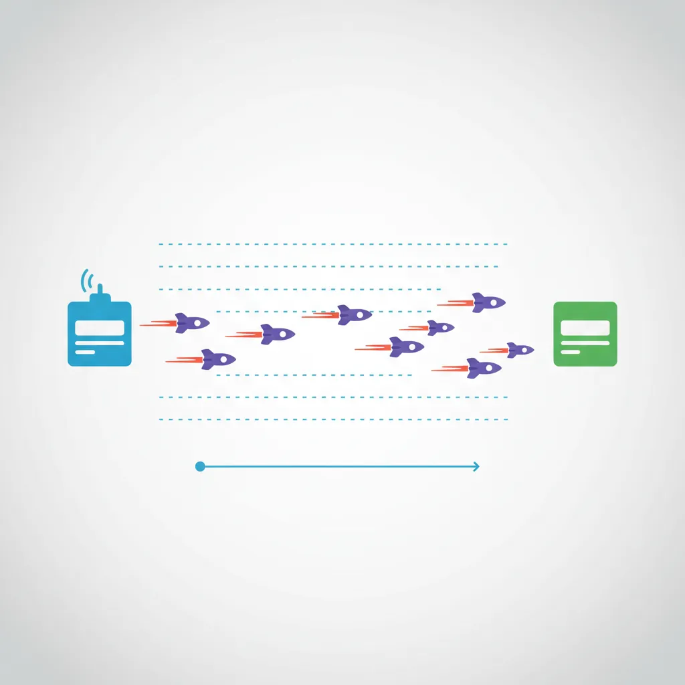
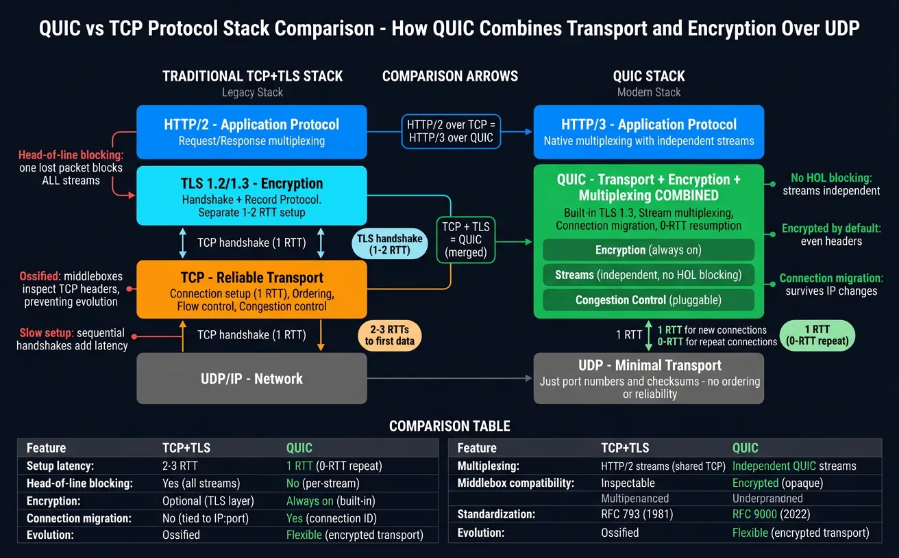

Dive deep into the Transport Layer where end-to-end communication happens. Master TCP's reliability mechanisms, UDP's speed advantages, and QUIC's modern innovations for the next generation of internet protocols.
In Part 3, we learned how IP routes packets across networks. But IP only provides best-effort delivery—packets can be lost, duplicated, or arrive out of order. The Transport Layer (Layer 4) solves these problems by providing:

The Transport Layer enables reliable end-to-end communication between applications using port-based multiplexing.
End-to-end communication between applications
Multiplexing via ports (multiple apps on one IP)
Reliability (TCP) or speed (UDP)
Flow and congestion control
Series Context: This is Part 4 of 20 in the Complete Protocols Master series. We're building from network addressing to end-to-end application communication.
A port is a 16-bit number (0-65535) that identifies a specific application or service on a host. Combined with an IP address, it forms a socket.
Socket = IP Address + Port
Example: 192.168.1.100:443
Port Ranges:
┌─────────────────┬────────────────┬─────────────────────────────────┐
│ Range │ Type │ Description │
├─────────────────┼────────────────┼─────────────────────────────────┤
│ 0 - 1023 │ Well-Known │ Reserved for system services │
│ │ │ (requires root/admin) │
├─────────────────┼────────────────┼─────────────────────────────────┤
│ 1024 - 49151 │ Registered │ Registered with IANA for apps │
├─────────────────┼────────────────┼─────────────────────────────────┤
│ 49152 - 65535 │ Dynamic/ │ Ephemeral ports for client │
│ │ Ephemeral │ connections (auto-assigned) │
└─────────────────┴────────────────┴─────────────────────────────────┘
Well-Known Ports
Common Port Numbers
Port
Protocol
Service
20, 21
TCP
FTP (Data, Control)
22
TCP
SSH
23
TCP
Telnet
25
TCP
SMTP (Email sending)
53
TCP/UDP
DNS
67, 68
UDP
DHCP (Server, Client)
80
TCP
HTTP
110
TCP
POP3 (Email retrieval)
143
TCP
IMAP (Email retrieval)
443
TCP/UDP
HTTPS / HTTP/3 (QUIC)
465
TCP
SMTPS (Email over TLS)
587
TCP
SMTP Submission
993
TCP
IMAPS
995
TCP
POP3S
3306
TCP
MySQL
3389
TCP
RDP (Remote Desktop)
5432
TCP
PostgreSQL
6379
TCP
Redis
8080
TCP
HTTP Alternate
# View listening ports on your system
# Linux
ss -tlnp # TCP listening ports with process
ss -ulnp # UDP listening ports
netstat -tlnp # Alternative
# Windows
netstat -an | findstr LISTENING
netstat -ano # With process IDs
# macOS
lsof -i -P | grep LISTEN
netstat -an | grep LISTEN
# Check what's using a specific port
# Linux
lsof -i :80
fuser 80/tcp
# Windows
netstat -ano | findstr :80
TCP: Transmission Control Protocol
TCP is a connection-oriented, reliable protocol that guarantees data delivery in order. It's the workhorse of the internet, carrying HTTP, email, file transfers, and more.

TCP establishes connections using a three-way handshake (SYN → SYN-ACK → ACK) before data transfer begins.
TCP Features
Key TCP Characteristics
Connection-oriented: Establishes connection before data transfer
Reliable delivery: Guarantees all data arrives correctly
Ordered: Data delivered in sequence
Error detection: Checksum verifies integrity
Flow control: Prevents overwhelming receiver
Congestion control: Adapts to network conditions
Full-duplex: Simultaneous bidirectional communication
Byte-stream: No message boundaries (stream of bytes)
TCP Header Structure
TCP Header
TCP Segment Header (20-60 bytes)
0 1 2 3
0 1 2 3 4 5 6 7 8 9 0 1 2 3 4 5 6 7 8 9 0 1 2 3 4 5 6 7 8 9 0 1
+-+-+-+-+-+-+-+-+-+-+-+-+-+-+-+-+-+-+-+-+-+-+-+-+-+-+-+-+-+-+-+-+
| Source Port | Destination Port |
+-+-+-+-+-+-+-+-+-+-+-+-+-+-+-+-+-+-+-+-+-+-+-+-+-+-+-+-+-+-+-+-+
| Sequence Number |
+-+-+-+-+-+-+-+-+-+-+-+-+-+-+-+-+-+-+-+-+-+-+-+-+-+-+-+-+-+-+-+-+
| Acknowledgment Number |
+-+-+-+-+-+-+-+-+-+-+-+-+-+-+-+-+-+-+-+-+-+-+-+-+-+-+-+-+-+-+-+-+
| Data | |C|E|U|A|P|R|S|F| |
| Offset| Rsrvd |W|C|R|C|S|S|Y|I| Window |
| | |R|E|G|K|H|T|N|N| |
+-+-+-+-+-+-+-+-+-+-+-+-+-+-+-+-+-+-+-+-+-+-+-+-+-+-+-+-+-+-+-+-+
| Checksum | Urgent Pointer |
+-+-+-+-+-+-+-+-+-+-+-+-+-+-+-+-+-+-+-+-+-+-+-+-+-+-+-+-+-+-+-+-+
| Options (if Data Offset > 5) |
+-+-+-+-+-+-+-+-+-+-+-+-+-+-+-+-+-+-+-+-+-+-+-+-+-+-+-+-+-+-+-+-+
| Data |
+-+-+-+-+-+-+-+-+-+-+-+-+-+-+-+-+-+-+-+-+-+-+-+-+-+-+-+-+-+-+-+-+
Key Fields:
- Source/Dest Port (16 bits each): Application endpoints
- Sequence Number (32 bits): Position of first data byte
- ACK Number (32 bits): Next expected byte from sender
- Data Offset (4 bits): Header length in 32-bit words
- Flags (9 bits): Control flags (SYN, ACK, FIN, RST, PSH, URG, etc.)
- Window (16 bits): Receive buffer space available
- Checksum (16 bits): Error detection
TCP Flags
TCP Control Flags
Flag
Name
Purpose
SYN
Synchronize
Initiate connection, synchronize sequence numbers
ACK
Acknowledgment
Acknowledges received data
FIN
Finish
Sender finished sending data
RST
Reset
Abort connection immediately
PSH
Push
Push data to application immediately
URG
Urgent
Urgent data present (use urgent pointer)
ECE
ECN-Echo
Congestion experienced
CWR
Congestion Window Reduced
Sender reduced transmission rate
The Three-Way Handshake
Connection Establishment
TCP Connection Setup
Three-Way Handshake: SYN → SYN-ACK → ACK
Client Server
| |
| 1. SYN (seq=100) |
| "I want to connect" |
|---------------------------------->|
| |
| 2. SYN-ACK (seq=300, ack=101) |
| "OK, I acknowledge, let's sync" |
|<----------------------------------|
| |
| 3. ACK (seq=101, ack=301) |
| "Got it, connection established" |
|---------------------------------->|
| |
| === CONNECTION ESTABLISHED === |
| |
| Data exchange can now begin |
|<=================================>|
Why Three Steps?
1. SYN: Client proposes initial sequence number (ISN)
2. SYN-ACK: Server acknowledges client's ISN, proposes its own ISN
3. ACK: Client acknowledges server's ISN
This ensures both sides agree on sequence numbers and
prevents old duplicate connections from being accepted.
TCP Three-Way Handshake
sequenceDiagram
participant C as Client
participant S as Server
Note over C,S: Connection Establishment
C->>S: SYN (seq=x)
Note right of C: Client initiates connection
S->>C: SYN-ACK (seq=y, ack=x+1)
Note left of S: Server acknowledges & syncs
C->>S: ACK (seq=x+1, ack=y+1)
Note over C,S: Connection ESTABLISHED
Note over C,S: Data Transfer
C->>S: Data (seq=x+1)
S->>C: ACK (ack=x+1+len)
Note over C,S: Connection Termination
C->>S: FIN
S->>C: ACK
S->>C: FIN
C->>S: ACK
Note over C,S: Connection CLOSED
Four-Way Teardown: FIN → ACK → FIN → ACK
Client Server
| |
| 1. FIN (seq=500) |
| "I'm done sending" |
|---------------------------------->|
| |
| 2. ACK (ack=501) |
| "Got it, but I might have more" |
|<----------------------------------|
| |
| (Server can still send data) |
| |
| 3. FIN (seq=700) |
| "OK, I'm also done" |
|<----------------------------------|
| |
| 4. ACK (ack=701) |
| "Acknowledged, goodbye" |
|---------------------------------->|
| |
| === CONNECTION CLOSED === |
Why Four Steps?
- TCP is full-duplex: each direction closes independently
- After receiving FIN, host can still send pending data
- TIME_WAIT state (2*MSL) ensures all packets are gone
RST vs FIN: FIN is a graceful close—both sides agree to terminate. RST is an abrupt reset—used when something's wrong (connection doesn't exist, port closed, application crash). RST doesn't require acknowledgment.
TCP Reliability Mechanisms
Sequence & ACK
Sequence Numbers and Acknowledgments
How TCP ensures reliable delivery:
1. Sequence Numbers: Track bytes sent
- Each byte has a sequence number
- ISN (Initial Sequence Number) is random for security
2. Acknowledgments: Confirm bytes received
- ACK number = next expected byte
- Cumulative: ACK 1000 means "got all bytes up to 999"
Example Data Transfer:
Client sends 1000 bytes starting at seq=1000:
┌─────────────────────────────────────────────┐
│ Seq=1000, Data=bytes 1000-1999 │
└─────────────────────────────────────────────┘
↓
Server acknowledges with ACK=2000:
┌─────────────────────────────────────────────┐
│ ACK=2000 ("I've received up to byte 1999, │
│ send me byte 2000 next") │
└─────────────────────────────────────────────┘
3. Retransmission: If ACK not received within timeout
- Sender retransmits the data
- Uses exponential backoff for timeouts
# Simulate TCP reliable data transfer with retransmission
import random
import time
class ReliableTCPSender:
"""Simulates TCP reliable transmission with retransmission"""
def __init__(self, loss_probability=0.2):
self.seq_num = 0
self.window_size = 4 # Simplified window
self.timeout = 1.0 # Seconds
self.loss_prob = loss_probability
self.sent_data = {} # seq -> (data, time_sent, retries)
def send_segment(self, data, simulate_loss=True):
"""Send a segment, potentially simulating packet loss"""
seq = self.seq_num
self.seq_num += len(data)
# Simulate network loss
if simulate_loss and random.random() < self.loss_prob:
print(f" [LOST] Segment seq={seq} lost in transit!")
return None
print(f" [SENT] Segment seq={seq}, data='{data}'")
return {"seq": seq, "data": data, "len": len(data)}
def receive_ack(self, ack_num):
"""Process acknowledgment"""
print(f" [ACK] Received ACK={ack_num}")
# Remove acknowledged data from sent buffer
self.sent_data = {k: v for k, v in self.sent_data.items()
if k >= ack_num}
def simulate_transfer():
"""Simulate reliable data transfer"""
print("TCP Reliable Transfer Simulation")
print("=" * 50)
print("Sending 'HELLO' character by character with 20% loss\n")
sender = ReliableTCPSender(loss_probability=0.2)
data_to_send = list("HELLO")
acked_up_to = 0
max_retries = 3
i = 0
while i < len(data_to_send):
char = data_to_send[i]
print(f"\nAttempting to send '{char}' (byte {i}):")
retries = 0
while retries < max_retries:
result = sender.send_segment(char)
if result:
# Simulate ACK (50% chance of ACK loss too)
if random.random() > 0.1: # 10% ACK loss
acked_up_to = result["seq"] + result["len"]
sender.receive_ack(acked_up_to)
i += 1
break
else:
print(f" [LOST] ACK lost! Retransmitting...")
retries += 1
else:
retries += 1
if retries < max_retries:
print(f" [RETRY] Retransmitting (attempt {retries + 1})...")
if retries >= max_retries:
print(f" [FAIL] Max retries exceeded!")
i += 1 # Move on (in real TCP, connection might reset)
print(f"\n{'=' * 50}")
print(f"Transfer complete! ACKed up to byte {acked_up_to}")
# Run simulation
simulate_transfer()
Flow Control: Sliding Window
Flow Control
Receiver-Based Flow Control
Flow Control prevents sender from overwhelming receiver.
Sliding Window Mechanism:
- Receiver advertises available buffer space (Window Size)
- Sender limits unacknowledged data to window size
- Window "slides" as ACKs arrive
Window Size Field: 16 bits (max 65,535 bytes)
Window Scaling Option: Allows windows up to 1 GB (shift count up to 14)
Example:
Initial: Receiver window = 4000 bytes
Sender Receiver (Buffer: 4000)
| |
| Segment 1-1000 (1000 bytes) |
|---------------------------------->| Buffer: 3000 free
| |
| Segment 1001-2000 (1000 bytes) |
|---------------------------------->| Buffer: 2000 free
| |
| ACK=2001, Window=2000 |
|<----------------------------------| (App consumed some)
| |
| Segment 2001-3000 (1000 bytes) |
|---------------------------------->| Buffer: 1000 free
| |
| ACK=3001, Window=3500 |
|<----------------------------------| (App consumed more)
Zero Window: When receiver buffer is full
- Sender stops until window opens
- Sender periodically probes with Window Probe
Congestion Control
Congestion Control
Network-Based Congestion Control
While flow control prevents overwhelming the receiver, congestion control prevents overwhelming the network.
# Visualize TCP congestion control
import matplotlib.pyplot as plt
def simulate_tcp_congestion_control(rounds=30, initial_ssthresh=16):
"""Simulate TCP Reno congestion control"""
cwnd = 1 # Initial congestion window (MSS units)
ssthresh = initial_ssthresh
cwnd_history = [cwnd]
ssthresh_history = [ssthresh]
phases = ["Slow Start"]
for round_num in range(1, rounds):
# Simulate congestion event at certain points
congestion_event = round_num in [12, 22]
triple_dup_ack = round_num == 12 # Fast retransmit
timeout = round_num == 22 # Timeout
if congestion_event:
if timeout:
# Timeout: severe congestion
ssthresh = max(cwnd // 2, 2)
cwnd = 1 # Back to slow start
phases.append("Timeout→SS")
elif triple_dup_ack:
# Fast Retransmit/Recovery
ssthresh = max(cwnd // 2, 2)
cwnd = ssthresh # Fast recovery
phases.append("3DupACK→FR")
else:
if cwnd < ssthresh:
# Slow Start: exponential growth
cwnd *= 2
if phases[-1] != "Slow Start":
phases.append("Slow Start")
else:
# Congestion Avoidance: linear growth
cwnd += 1
if "Avoidance" not in phases[-1]:
phases.append("Cong. Avoidance")
cwnd_history.append(cwnd)
ssthresh_history.append(ssthresh)
return cwnd_history, ssthresh_history, phases
# Generate data
cwnd_data, ssthresh_data, phases = simulate_tcp_congestion_control()
print("TCP Congestion Control Simulation (TCP Reno)")
print("=" * 60)
print(f"{'Round':<8} {'cwnd':<8} {'ssthresh':<10} {'Phase'}")
print("-" * 60)
phase_idx = 0
for i in range(0, len(cwnd_data), 3): # Print every 3rd round
phase = phases[min(phase_idx, len(phases)-1)]
print(f"{i:<8} {cwnd_data[i]:<8} {ssthresh_data[i]:<10} {phase}")
phase_idx += 1
print("\n" + "=" * 60)
print("Key Events:")
print(" Round 12: 3 Duplicate ACKs → Fast Retransmit/Recovery")
print(" Round 22: Timeout → Back to Slow Start")
Modern Algorithms
Modern Congestion Control Algorithms
Algorithm
Type
Key Feature
Used By
Reno
Loss-based
Fast Retransmit/Recovery
Classic default
CUBIC
Loss-based
Cubic function growth
Linux default
BBR
Model-based
Bandwidth & RTT estimation
Google, YouTube
BBR v2
Model-based
Better fairness
Google (newer)
DCTCP
ECN-based
For data centers
Azure, AWS
BBR (Bottleneck Bandwidth and RTT): Developed by Google, BBR doesn't wait for packet loss to detect congestion. Instead, it continuously estimates the bottleneck bandwidth and minimum RTT, achieving higher throughput on lossy links (like satellite) and reducing bufferbloat.
TCP Connection States

TCP connections transition through multiple states — from CLOSED to ESTABLISHED for data transfer, then back to CLOSED.
TCP Connection State Machine
stateDiagram-v2
[*] --> CLOSED
CLOSED --> LISTEN : Passive Open
CLOSED --> SYN_SENT : Active Open (send SYN)
LISTEN --> SYN_RCVD : Receive SYN (send SYN+ACK)
SYN_SENT --> SYN_RCVD : Receive SYN (send SYN+ACK)
SYN_SENT --> ESTABLISHED : Receive SYN+ACK (send ACK)
SYN_RCVD --> ESTABLISHED : Receive ACK
ESTABLISHED --> FIN_WAIT_1 : Close (send FIN)
ESTABLISHED --> CLOSE_WAIT : Receive FIN (send ACK)
FIN_WAIT_1 --> FIN_WAIT_2 : Receive ACK
FIN_WAIT_1 --> CLOSING : Receive FIN (send ACK)
FIN_WAIT_1 --> TIME_WAIT : Receive FIN+ACK (send ACK)
FIN_WAIT_2 --> TIME_WAIT : Receive FIN (send ACK)
CLOSING --> TIME_WAIT : Receive ACK
CLOSE_WAIT --> LAST_ACK : Close (send FIN)
LAST_ACK --> CLOSED : Receive ACK
TIME_WAIT --> CLOSED : Timeout (2MSL)
# View TCP connection states on your system
# Linux - All TCP connections with states
ss -tan
# or
netstat -tan
# Example output:
# State Recv-Q Send-Q Local Address:Port Peer Address:Port
# LISTEN 0 128 0.0.0.0:22 0.0.0.0:*
# ESTABLISHED 0 0 192.168.1.100:22 192.168.1.50:54321
# TIME_WAIT 0 0 192.168.1.100:80 10.0.0.5:45678
# Count connections by state
ss -tan | awk '{print $1}' | sort | uniq -c | sort -rn
# Windows
netstat -an | findstr TCP
# Watch connections in real-time (Linux)
watch -n 1 'ss -tan | head -20'
TCP Timers
TCP Timers
Important TCP Timers
Timer
Purpose
Typical Value
Retransmission (RTO)
When to retransmit unacked segment
Dynamic (based on RTT)
Persist
Probe zero-window receiver
5-60 seconds
Keepalive
Check if idle connection alive
2 hours (default)
TIME_WAIT (2MSL)
Ensure final ACK delivered
60-120 seconds
FIN_WAIT_2
Wait for peer's FIN
60 seconds (Linux)
TIME_WAIT Accumulation: High-traffic servers can accumulate thousands of TIME_WAIT connections. Solutions:
tcp_tw_reuse: Allow reusing TIME_WAIT sockets for outgoing connections
Connection pooling: Reuse established connections
Load balancing: Distribute connections across servers
UDP: User Datagram Protocol
UDP is a connectionless, unreliable protocol that trades reliability for speed and simplicity.

UDP sends datagrams without establishing a connection — a simple fire-and-forget approach optimized for speed.
UDP Characteristics
UDP Key Features
Connectionless: No handshake, just send
Unreliable: No delivery guarantee, no retransmission
Simple devices, frequent updates. Loss of one reading okay.
SNMP
Network monitoring should be lightweight.
TFTP
Simple file transfer with app-level ACKs.
# Simple UDP client and server in Python
import socket
# UDP Server
def udp_server(host='127.0.0.1', port=12345):
"""Simple UDP echo server"""
sock = socket.socket(socket.AF_INET, socket.SOCK_DGRAM)
sock.bind((host, port))
print(f"UDP Server listening on {host}:{port}")
while True:
data, addr = sock.recvfrom(1024)
print(f"Received from {addr}: {data.decode()}")
# Echo back
response = f"Echo: {data.decode()}"
sock.sendto(response.encode(), addr)
# UDP Client
def udp_client(message, host='127.0.0.1', port=12345):
"""Simple UDP client"""
sock = socket.socket(socket.AF_INET, socket.SOCK_DGRAM)
try:
# No connection needed - just send!
sock.sendto(message.encode(), (host, port))
print(f"Sent: {message}")
# Wait for response (with timeout)
sock.settimeout(2.0)
data, addr = sock.recvfrom(1024)
print(f"Received: {data.decode()}")
except socket.timeout:
print("No response (timeout)")
finally:
sock.close()
# Example usage (run server in one terminal, client in another):
print("UDP Example Code")
print("=" * 50)
print("Server: udp_server()")
print("Client: udp_client('Hello UDP!')")
print("\nNote: UDP is fire-and-forget - no connection setup!")
QUIC: The Future of Transport
QUIC (Quick UDP Internet Connections) is a modern transport protocol developed by Google and standardized by the IETF. It runs over UDP but provides TCP-like reliability with better performance.

QUIC combines transport, encryption, and multiplexing into a single layer over UDP, replacing the TCP+TLS stack.
Why QUIC?
Problems QUIC Solves
Head-of-line blocking: In TCP, one lost packet blocks all streams. QUIC multiplexes independent streams.
Slow connection setup: TCP + TLS = 2-3 RTTs. QUIC combines them into 1 RTT (0-RTT for repeat visits).
Ossification: TCP can't evolve because middleboxes expect specific formats. QUIC is encrypted and flexible.
Connection migration: TCP connections break on IP change. QUIC uses connection IDs for seamless mobility.
First Connection (1-RTT):
Client Server
| |
| INITIAL (ClientHello + QUIC) |
|---------------------------------->|
| |
| INITIAL (ServerHello + QUIC) |
| HANDSHAKE (Encrypted Extensions) |
|<----------------------------------|
| |
| HANDSHAKE (Finished) |
| + APPLICATION DATA | ← Data in 1 RTT!
|---------------------------------->|
| |
Repeat Connection (0-RTT):
Client Server
| |
| INITIAL + 0-RTT DATA | ← Data immediately!
|---------------------------------->| (using cached keys)
| |
| INITIAL + HANDSHAKE + 1-RTT DATA |
|<----------------------------------|
| |
0-RTT allows sending data before handshake completes
(slight replay attack risk, use for idempotent requests)
QUIC vs TCP Comparison
Comparison
Detailed QUIC vs TCP
Aspect
TCP
QUIC
Underlying Protocol
Native (kernel)
Over UDP (user space)
Encryption
Separate (TLS)
Integrated (TLS 1.3)
Streams
Single ordered stream
Multiple independent streams
Connection ID
4-tuple (IPs + ports)
Connection ID (survives IP change)
Header
Visible to middleboxes
Encrypted (prevents ossification)
Congestion Control
Kernel implementation
User space (easy to update)
Deployment
Universal
Growing (Google, Cloudflare, Meta)
# Check if a website supports HTTP/3 (QUIC)
# Using curl (if compiled with HTTP/3 support)
curl --http3 -I https://www.google.com
# Using online tools:
# https://http3check.net/
# https://www.http3check.com/
# Check Alt-Svc header (advertises HTTP/3 support)
curl -sI https://www.google.com | grep -i alt-svc
# Output: alt-svc: h3=":443"; ma=2592000
# In browser DevTools:
# Network tab → Protocol column shows "h3" for HTTP/3
# Chrome flags to enable/test QUIC:
# chrome://flags/#enable-quic
HTTP/3 Adoption: As of 2024, ~30% of web traffic uses HTTP/3 (QUIC). Major adopters include Google (YouTube, Search), Facebook, Cloudflare, and most CDNs. Check your favorite sites with the tools above!
Protocol Comparison
Summary
TCP vs UDP vs QUIC
Feature
TCP
UDP
QUIC
Connection
Required (3-way)
None
Required (1-RTT)
Reliability
✅ Guaranteed
❌ None
✅ Guaranteed
Ordering
✅ Ordered
❌ Unordered
✅ Per-stream
Flow Control
✅ Yes
❌ No
✅ Yes
Congestion Control
✅ Yes
❌ No
✅ Yes (pluggable)
Header Size
20-60 bytes
8 bytes
Variable (encrypted)
Encryption
Optional (TLS)
None built-in
✅ Mandatory
Multiplexing
Application layer
None
✅ Native streams
Best For
Web, email, files
Gaming, VoIP, DNS
Modern web, mobile
Choosing a Protocol:
Use TCP when you need reliable, ordered delivery and broad compatibility
Use UDP when speed matters more than reliability (real-time, lossy-tolerant)
Use QUIC for modern web applications needing fast, encrypted, multiplexed connections
Hands-On Exercises
Exercise 1: TCP Socket Programming
# Complete TCP client-server example
import socket
import threading
def tcp_server(host='127.0.0.1', port=9999):
"""TCP Echo Server with connection handling"""
server = socket.socket(socket.AF_INET, socket.SOCK_STREAM)
server.setsockopt(socket.SOL_SOCKET, socket.SO_REUSEADDR, 1)
server.bind((host, port))
server.listen(5)
print(f"TCP Server listening on {host}:{port}")
print("States: CLOSED → LISTEN")
while True:
client_socket, addr = server.accept()
print(f"\nConnection from {addr}")
print("States: LISTEN → SYN_RECEIVED → ESTABLISHED")
# Handle client in thread
thread = threading.Thread(
target=handle_client,
args=(client_socket, addr)
)
thread.start()
def handle_client(client_socket, addr):
"""Handle individual client connection"""
try:
while True:
data = client_socket.recv(1024)
if not data:
break
message = data.decode()
print(f"Received from {addr}: {message}")
# Echo back with modification
response = f"Server received: {message}"
client_socket.send(response.encode())
except ConnectionResetError:
print(f"Connection reset by {addr}")
finally:
print(f"Closing connection with {addr}")
print("States: ESTABLISHED → FIN_WAIT/CLOSE_WAIT → CLOSED")
client_socket.close()
def tcp_client(messages, host='127.0.0.1', port=9999):
"""TCP Client with multiple messages"""
client = socket.socket(socket.AF_INET, socket.SOCK_STREAM)
print(f"Connecting to {host}:{port}")
print("States: CLOSED → SYN_SENT → ESTABLISHED")
client.connect((host, port))
try:
for msg in messages:
print(f"\nSending: {msg}")
client.send(msg.encode())
response = client.recv(1024)
print(f"Received: {response.decode()}")
finally:
print("\nClosing connection")
print("States: ESTABLISHED → FIN_WAIT_1 → FIN_WAIT_2 → TIME_WAIT → CLOSED")
client.close()
# Example usage
print("TCP Socket Programming Example")
print("=" * 50)
print("1. Run server: tcp_server()")
print("2. Run client: tcp_client(['Hello', 'World', 'TCP'])")
print("\nThe server handles multiple clients concurrently.")
Exercise 2: Packet Analysis with Scapy
# Analyze TCP packets with Scapy (requires: pip install scapy)
# Note: Requires root/admin privileges
try:
from scapy.all import IP, TCP, UDP, sr1, send, sniff
SCAPY_AVAILABLE = True
except ImportError:
SCAPY_AVAILABLE = False
print("Scapy not installed. Install with: pip install scapy")
def analyze_tcp_flags(packet):
"""Analyze TCP flags in a packet"""
if not SCAPY_AVAILABLE:
return
flags = {
'F': 'FIN',
'S': 'SYN',
'R': 'RST',
'P': 'PSH',
'A': 'ACK',
'U': 'URG',
'E': 'ECE',
'C': 'CWR'
}
if TCP in packet:
tcp = packet[TCP]
print(f"Source Port: {tcp.sport}")
print(f"Dest Port: {tcp.dport}")
print(f"Seq: {tcp.seq}")
print(f"Ack: {tcp.ack}")
print(f"Window: {tcp.window}")
# Parse flags
flag_str = str(tcp.flags)
active_flags = [flags.get(f, f) for f in flag_str]
print(f"Flags: {', '.join(active_flags)}")
def craft_syn_packet(target_ip, target_port):
"""Craft a TCP SYN packet (educational purposes)"""
if not SCAPY_AVAILABLE:
print("Example SYN packet structure:")
print(" IP(dst='target') / TCP(dport=80, flags='S')")
return None
# Create IP layer
ip = IP(dst=target_ip)
# Create TCP layer with SYN flag
tcp = TCP(dport=target_port, flags='S', seq=1000)
# Combine layers
packet = ip / tcp
print("Crafted SYN Packet:")
print(f" Destination: {target_ip}:{target_port}")
print(f" Flags: SYN")
print(f" Seq: 1000")
return packet
# Example without running (for safety)
print("TCP Packet Crafting Example (Scapy)")
print("=" * 50)
print("Note: Actually sending packets requires root privileges")
print("\nExample code to send SYN and receive SYN-ACK:")
print("""
from scapy.all import IP, TCP, sr1
# Craft SYN packet
syn = IP(dst='example.com') / TCP(dport=80, flags='S')
# Send and wait for response
syn_ack = sr1(syn, timeout=2)
# Analyze response
if syn_ack and syn_ack[TCP].flags == 'SA':
print('Received SYN-ACK!')
print(f'Server seq: {syn_ack[TCP].seq}')
""")
Self-Assessment
Quiz: Test Your Knowledge
What are the three steps in TCP connection establishment? (SYN, SYN-ACK, ACK)
What's the size of UDP header? (8 bytes)
What TCP flag gracefully closes a connection? (FIN)
What port range is "well-known"? (0-1023)
What does cwnd stand for? (Congestion Window)
Why does QUIC use UDP underneath? (To bypass middlebox ossification)
What timer keeps TCP from sending to a full buffer? (Persist timer)